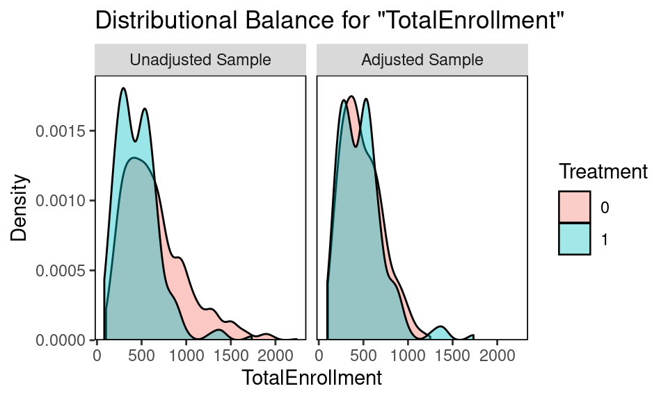

6 FE
6.0.1 Data cleaning
Using OpenData NYC, we pull aggregate K-8 attendance records and socio-economic variables for all 1125 public schools.
| DBN | School Name | ENI | % Male | % Black | %SWD | % Poverty | |
|---|---|---|---|---|---|---|---|
| 1 | 01M015 | P.S. 015 Roberto Clemente | 190 | 0.890 | 0.479 | 0.032 | 0.258 |
| 2 | 01M019 | P.S. 019 Asher Levy | 257 | 0.679 | 0.556 | 0.062 | 0.350 |
| 3 | 01M020 | P.S. 020 Anna Silver | 497 | 0.800 | 0.509 | 0.032 | 0.237 |
| Treatment | Mean Attendance | Mean Chronic Absenteeism |
|---|---|---|
| 0 | 92.23 | 27.55 |
| 1 | 93.48 | 19.83 |
| Treatment | ENI | Percent Black | PercentSWD | Percent Poverty | Total Enrollment |
|---|---|---|---|---|---|
| 0 | 0.77 | 0.287 | 0.22 | 0.812 | 641.898 |
| 1 | 0.59 | 0.218 | 0.19 | 0.611 | 457.217 |
6.0.2 Covariates
Treatment (inclusion) is a significant predictor of absenteeism (CA), without matching. However, five covariates generally associated with higher absenteeism are predictive of both the treatment and the outcome, making them confounders.
\[ \begin{align} ChronicAbsenteeism = \beta_0 +\beta_1Treatment + \beta_2ENI+ \beta_3PercentBlack+\beta_4PercentSWD + \\ \beta_5PercentPoverty +\beta_6PercentPoverty+ BoroughFixedEffects + \epsilon \end{align} \]
| Predictor | B | SE | t | p |
|---|---|---|---|---|
| (Intercept) | 1.78 | 1.692 | 1.05 | 0.293 |
| treatment | -1.88 | 0.684 | -2.75 | 0.006 |
| TotalEnrollment | 0.00 | 0.001 | -3.97 | 0.000 |
| ENI | 43.59 | 3.981 | 10.95 | 0.000 |
| PercentBlack | 16.62 | 1.068 | 15.56 | 0.000 |
| PercentSWD | 36.88 | 4.501 | 8.19 | 0.000 |
| PercentPoverty | -20.36 | 3.960 | -5.14 | 0.000 |
| factor(borough)Brooklyn | -3.76 | 0.683 | -5.51 | 0.000 |
| factor(borough)Manhattan | -2.58 | 0.831 | -3.10 | 0.002 |
| factor(borough)Queens | -2.62 | 0.788 | -3.33 | 0.001 |
| factor(borough)Staten Island | 1.22 | 1.248 | 0.98 | 0.330 |
\[ \begin{align} Treatment = \beta_0 +\beta_1TotalEnrollment + \beta_2ENI+ \beta_3PercentBlack+\beta_4PercentSWD + \\ \beta_5PercentPoverty + BoroughFixedEffects + \epsilon \end{align} \]
| Predictor | B | SE | t | p |
|---|---|---|---|---|
| (Intercept) | 1.19 | 0.065 | 18.27 | 0.000 |
| TotalEnrollment | 0.00 | 0.000 | -10.35 | 0.000 |
| ENI | 0.08 | 0.174 | 0.44 | 0.663 |
| PercentBlack | -0.08 | 0.047 | -1.79 | 0.074 |
| PercentSWD | -1.21 | 0.194 | -6.27 | 0.000 |
| PercentPoverty | -0.68 | 0.172 | -3.94 | 0.000 |
| factor(borough)Brooklyn | 0.01 | 0.030 | 0.44 | 0.663 |
| factor(borough)Manhattan | 0.17 | 0.036 | 4.73 | 0.000 |
| factor(borough)Queens | -0.11 | 0.034 | -3.23 | 0.001 |
| factor(borough)Staten Island | -0.17 | 0.054 | -3.10 | 0.002 |
6.1 Matching
We match at a ratio of 3:1, control:treatment groups. The original sample has 885 Control (no inclusion) schools and 240 Treatment (inclusion) schools. The matched sample has 418 Control and 181 Treatment. All covariates cross the acceptable standardized mean difference threshold, and visual diagnostics of the covariate distributions confirm the balance improvement.
6.1.1 Assess Balance
#> Call
#> matchit(formula = treatment ~ PercentBlack + PercentSWD + PercentPoverty +
#> TotalEnrollment + ENI, data = merged, method = "nearest",
#> caliper = 0.25, ratio = 3, family = binomial())
#>
#> Balance Measures
#> Type Diff.Adj M.Threshold
#> distance Distance 0.0506 Balanced, <0.1
#> PercentBlack Contin. 0.0545 Balanced, <0.1
#> PercentSWD Contin. -0.0082 Balanced, <0.1
#> PercentPoverty Contin. -0.0288 Balanced, <0.1
#> TotalEnrollment Contin. -0.0293 Balanced, <0.1
#> ENI Contin. -0.0236 Balanced, <0.1
#>
#> Balance tally for mean differences
#> count
#> Balanced, <0.1 6
#> Not Balanced, >0.1 0
#>
#> Variable with the greatest mean difference
#> Variable Diff.Adj M.Threshold
#> PercentBlack 0.0545 Balanced, <0.1
#>
#> Sample sizes
#> Control Treated
#> All 885. 240
#> Matched (ESS) 340.67 181
#> Matched (Unweighted) 418. 181
#> Unmatched 467. 59


6.1.2 Matched Estimates
Matching yields a statistically significant treatment effect for both absenteeism and attendance, improving our confidence in the causal effect of inclusion on overall school attendance rates.
\[ \begin{align} ChronicAbsenteeism = \beta_0 +\beta_1Treatment + \epsilon \end{align} \]
| Predictor | B | SE | t | p |
|---|---|---|---|---|
| (Intercept) | 13.41 | 1.665 | 8.06 | 0 |
| treatment | -4.12 | 0.873 | -4.73 | 0 |
| PercentBlack | 19.15 | 1.623 | 11.80 | 0 |
| PercentSWD | 60.83 | 6.465 | 9.41 | 0 |
| boroughBrooklyn | -4.63 | 1.113 | -4.16 | 0 |
| boroughManhattan | -5.09 | 1.232 | -4.13 | 0 |
| boroughQueens | -8.45 | 1.203 | -7.02 | 0 |
| boroughStaten Island | -9.68 | 1.917 | -5.05 | 0 |
6.1.3 within borough matching
#> Call
#> matchit(formula = treatment ~ PercentSWD + PercentPoverty + TotalEnrollment +
#> ENI, data = bronx, method = "nearest", caliper = 0.25, ratio = 2,
#> family = binomial())
#>
#> Balance Measures
#> Type Diff.Adj M.Threshold
#> distance Distance 0.0041 Balanced, <0.1
#> PercentSWD Contin. 0.0182 Balanced, <0.1
#> PercentPoverty Contin. 0.1494 Not Balanced, >0.1
#> TotalEnrollment Contin. -0.0565 Balanced, <0.1
#> ENI Contin. 0.0834 Balanced, <0.1
#>
#> Balance tally for mean differences
#> count
#> Balanced, <0.1 4
#> Not Balanced, >0.1 1
#>
#> Variable with the greatest mean difference
#> Variable Diff.Adj M.Threshold
#> PercentPoverty 0.1494 Not Balanced, >0.1
#>
#> Sample sizes
#> Control Treated
#> All 222. 33
#> Matched (ESS) 45.07 26
#> Matched (Unweighted) 48. 26
#> Unmatched 174. 7| Predictor | B | SE | t | p |
|---|---|---|---|---|
| (Intercept) | 32.60 | 1.323 | 24.63 | 0.000 |
| treatment | -4.79 | 2.232 | -2.14 | 0.035 |
#> Call
#> matchit(formula = treatment ~ PercentBlack + PercentSWD + PercentPoverty +
#> TotalEnrollment + ENI, data = manhattan, method = "nearest",
#> caliper = 0.25, ratio = 2, family = binomial())
#>
#> Balance Measures
#> Type Diff.Adj M.Threshold
#> distance Distance 0.1703
#> PercentBlack Contin. -0.0324 Balanced, <0.1
#> PercentSWD Contin. -0.1100 Not Balanced, >0.1
#> PercentPoverty Contin. -0.1515 Not Balanced, >0.1
#> TotalEnrollment Contin. -0.0104 Balanced, <0.1
#> ENI Contin. -0.1603 Not Balanced, >0.1
#>
#> Balance tally for mean differences
#> count
#> Balanced, <0.1 2
#> Not Balanced, >0.1 3
#>
#> Variable with the greatest mean difference
#> Variable Diff.Adj M.Threshold
#> ENI -0.1603 Not Balanced, >0.1
#>
#> Sample sizes
#> Control Treated
#> All 94. 95
#> Matched (ESS) 59.14 53
#> Matched (Unweighted) 64. 53
#> Unmatched 30. 42| Predictor | B | SE | t | p |
|---|---|---|---|---|
| (Intercept) | 28.36 | 1.636 | 17.34 | 0.000 |
| treatment | -6.61 | 2.430 | -2.72 | 0.008 |
6.1.3.1 match on boroughs
Two ways:multilevel logistic regression and logistic regression with fixed cluster effects can be used to estimate propensity scores. The effects of individual-level covariates vary across clusters.
merged<- read_csv("data/full_school_data.csv")
#> New names:
#> * `` -> ...1
#> Rows: 1125 Columns: 56
#> ── Column specification ────────────────────────────────────────────────────────
#> Delimiter: ","
#> chr (6): DBN, School Name, school_type, class_option, borough, Year
#> dbl (50): ...1, Total Enrollment, Economic Need Index, % Male, % Black, % Wh...
#>
#> ℹ Use `spec()` to retrieve the full column specification for this data.
#> ℹ Specify the column types or set `show_col_types = FALSE` to quiet this message.
#libraries
library(MatchIt)
### nearest matching
merged$treatment <- ifelse(merged$self_contained == 1, 0 , 1)
merged <- merged %>%
rename(TotalEnrollment = `Total Enrollment`,
ENI = `Economic Need Index`,
PercentBlack = `% Black`,
PercentWhite = `% White`,
PercentSWD = `% Students with Disabilities`,
PercentPoverty = `% Poverty`) %>%
select(treatment, `TotalEnrollment`, ENI, PercentBlack,
PercentSWD, PercentPoverty, borough, `% Chronically Absent`, `% Attendance`)
school_nearest <- matchit(treatment ~ PercentBlack+ PercentSWD + PercentPoverty + TotalEnrollment +
ENI + borough,
family = binomial(),
data = merged,
method = "nearest",
caliper = 0.25,
ratio = 2)
library(cobalt)
bal.tab(school_nearest, m.threshold = 0.1)
#> Call
#> matchit(formula = treatment ~ PercentBlack + PercentSWD + PercentPoverty +
#> TotalEnrollment + ENI + borough, data = merged, method = "nearest",
#> caliper = 0.25, ratio = 2, family = binomial())
#>
#> Balance Measures
#> Type Diff.Adj M.Threshold
#> distance Distance 0.0682 Balanced, <0.1
#> PercentBlack Contin. -0.0971 Balanced, <0.1
#> PercentSWD Contin. -0.0392 Balanced, <0.1
#> PercentPoverty Contin. -0.0534 Balanced, <0.1
#> TotalEnrollment Contin. 0.0179 Balanced, <0.1
#> ENI Contin. -0.0365 Balanced, <0.1
#> borough_Bronx Binary 0.0000 Balanced, <0.1
#> borough_Brooklyn Binary 0.0084 Balanced, <0.1
#> borough_Manhattan Binary 0.0028 Balanced, <0.1
#> borough_Queens Binary -0.0168 Balanced, <0.1
#> borough_Staten Island Binary 0.0056 Balanced, <0.1
#>
#> Balance tally for mean differences
#> count
#> Balanced, <0.1 11
#> Not Balanced, >0.1 0
#>
#> Variable with the greatest mean difference
#> Variable Diff.Adj M.Threshold
#> PercentBlack -0.0971 Balanced, <0.1
#>
#> Sample sizes
#> Control Treated
#> All 885. 240
#> Matched (ESS) 258.4 179
#> Matched (Unweighted) 289. 179
#> Unmatched 596. 61
nearest_matched <- match.data(school_nearest)
## estimating treatment effects
lm(`% Chronically Absent` ~ treatment + borough, data = nearest_matched) %>%
tidy() %>%
kable(caption = "Causal Effect using Matched Data",
col.names = c("Predictor", "B", "SE", "t", "p"),
digits = c(0,2,3,2,3))| Predictor | B | SE | t | p |
|---|---|---|---|---|
| (Intercept) | 30.96 | 1.324 | 23.39 | 0.000 |
| treatment | -4.49 | 1.156 | -3.88 | 0.000 |
| boroughBrooklyn | -0.71 | 1.573 | -0.45 | 0.653 |
| boroughManhattan | -3.19 | 1.694 | -1.88 | 0.060 |
| boroughQueens | -12.41 | 1.821 | -6.81 | 0.000 |
| boroughStaten Island | -11.55 | 4.238 | -2.73 | 0.007 |